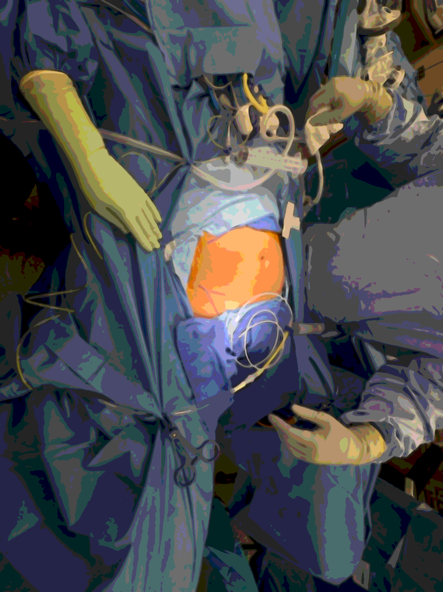
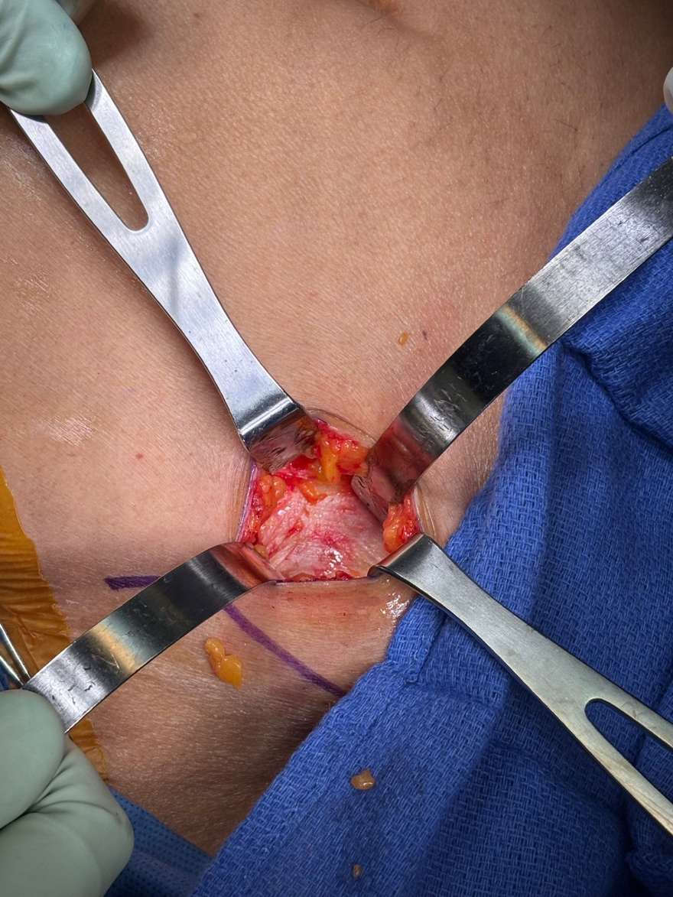
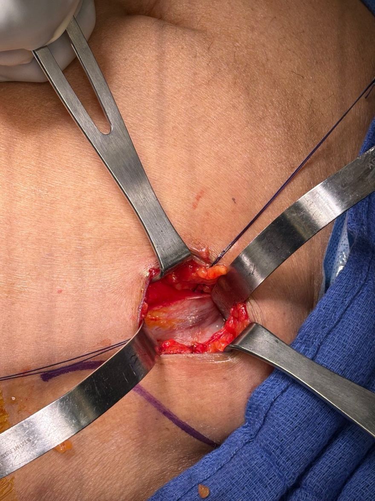
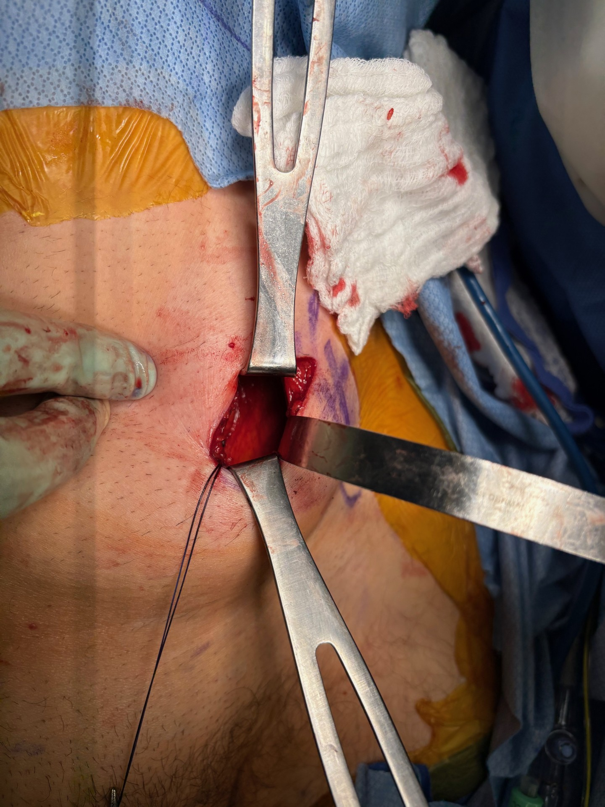
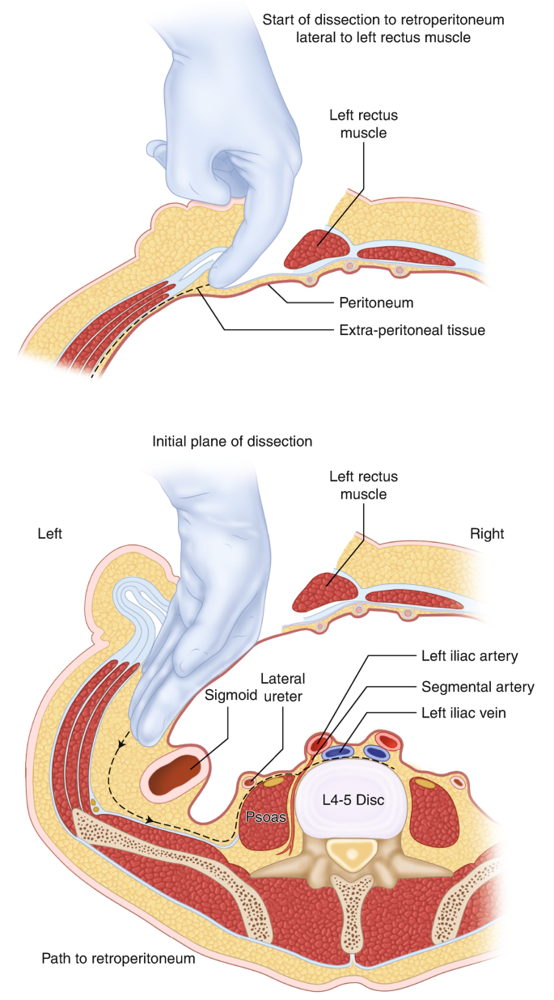
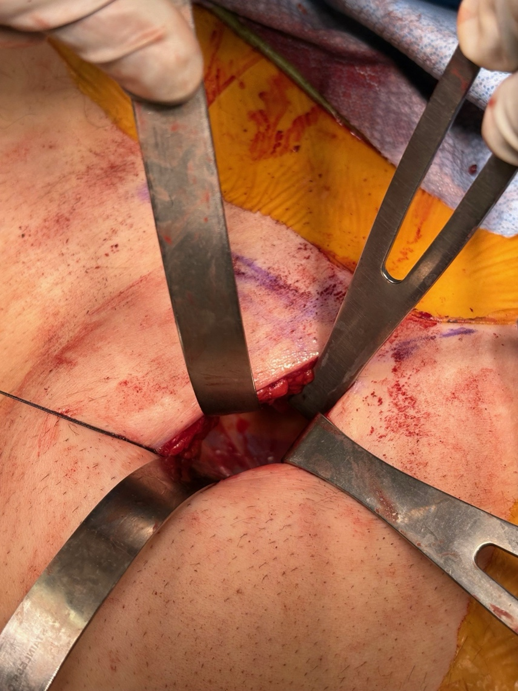
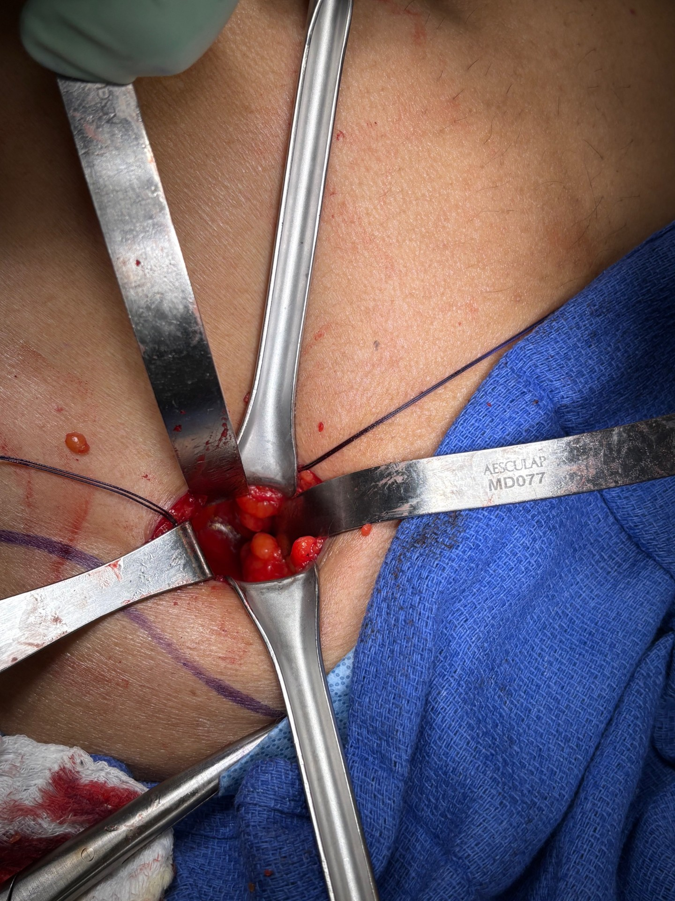
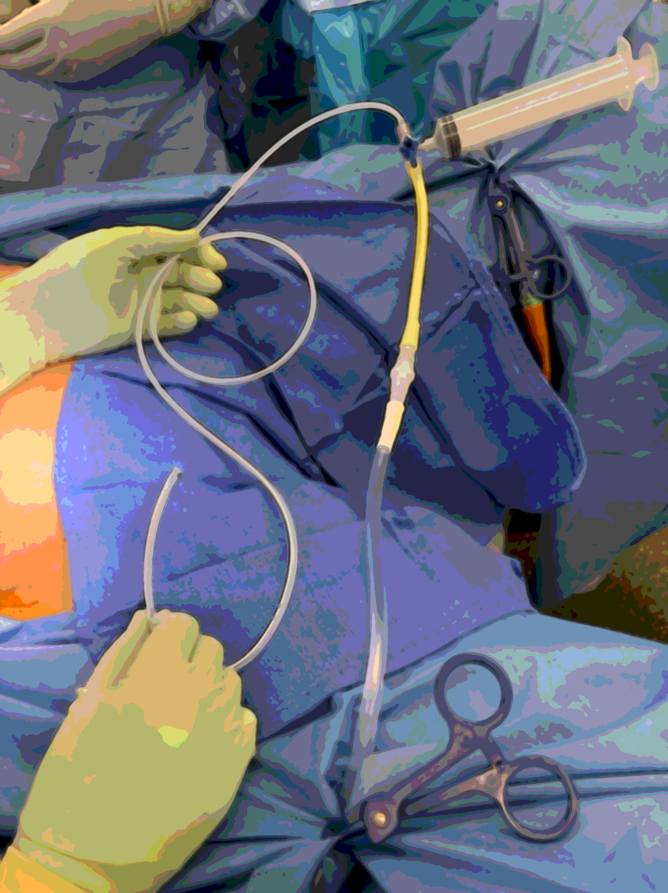
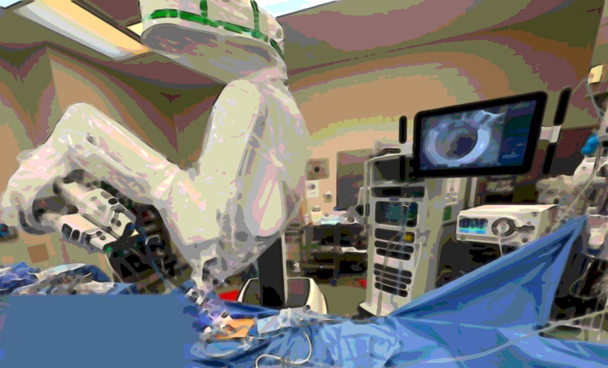
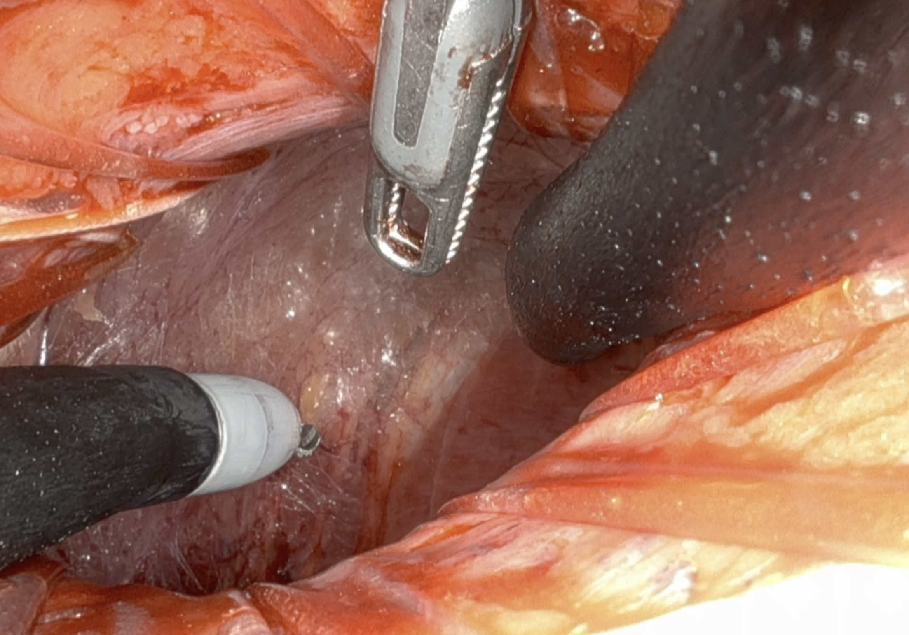

Platform
da Vinci SP
A reproducible, low-morbidity approach to the ureter for single-port robotic reconstruction. The retroperitoneum is entered directly through a small incision near the anterior superior iliac spine (ASIS), the ureter is localized with a ureteroscope under fluorescence, and the SP system is docked at low insufflation pressure.
Have everything staged before the patient is positioned. The ureteroscope in particular must be available at the start of the case — it identifies the ureter and the level of the stricture, and later serves as the intracorporeal light source for fluorescence localization.
Position depends on whether you will need urethral access during the reconstruction.

Begin endoscopically to define exactly where you are headed before any incision is made.
The incision is built off a single reliable landmark — the ipsilateral ASIS.
Work down through the lateral abdominal wall one fascial layer at a time. Clear, place stay sutures, and divide each layer in turn. Step through the layers below to see each stage.




Clear the fat off the external oblique aponeurosis, place stay sutures on either side, and incise it.
With the transversalis breached, develop the retroperitoneal space and establish your floor.


A single-port field has no dedicated suction-irrigator arm, so one is assembled on the back table. Connect the components in order, from the drain at the patient end to the Neptune at the suction end.


Now the ureteroscope earns its keep. Switch the robotic camera into fluorescence (Firefly) mode and look for the glow of the ureteroscope's light shining through the wall of the ureter — no ICG required.

Standard · 0°Prepared as an educational technique guide · Henry Ford Health, Urology. Intra-operative photographs and intracorporeal images are from the operative series described above. This material is intended for trained surgeons and trainees and does not replace institutional protocol or clinical judgment.